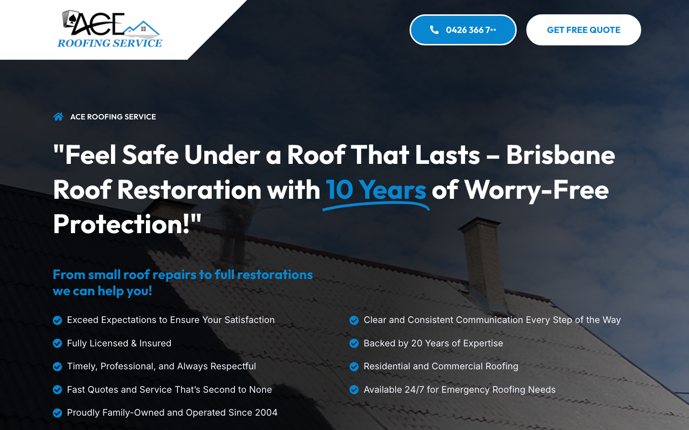

Ace Roofing Service
Your website is doing some things well—but it's missing calls from customers who can't find your phone number quickly enough.
What's Working Well
-
Your message is clearVisitors immediately understand you're a roofing service in Brisbane. Your business name and the main headline make it obvious what you do.
-
You've included trust signalsThe site mentions you're licensed, insured, family-owned, and have been operating since 2004. These details matter to homeowners choosing a roofer.
-
The site loads quicklyYour website performs well on mobile phones—Google gave it a 95 out of 100 for speed. Fast loading keeps visitors from leaving before they've even seen your services.
What's Holding You Back
-
Your phone number is hard to find on mobileMost people searching for a roofer on their phone want to call straight away—especially for urgent jobs like leaks or storm damage. Right now, there's no visible phone button at the top of your mobile site. Customers have to scroll down to find how to contact you, and many won't bother. They'll just ring the next business on the list instead.
-
The phone number appears cut off on desktopOn a computer screen, your phone number shows as "0426 366 7..." with dots at the end. It looks unfinished, and some visitors won't trust it or won't be able to dial the full number.
-
Tapping the phone number doesn't dial automaticallyWhen someone on a mobile phone taps your number, it should open their phone app ready to call. Right now it doesn't, so they have to copy the number, switch apps, and paste it in manually. Every extra step loses more customers.
-
The main image is too dark to show your workThe large roof photo at the top of your homepage has a heavy dark overlay. Customers want to see the quality of your roofing work—clear, bright project photos build trust. When the image is hard to make out, it can feel generic rather than showcasing your actual craftsmanship.
-
You have zero Google reviewsReview count matters as much as star rating when people are comparing roofers. Even if your work is excellent, no reviews makes new customers hesitant. It also affects how high you show up in local search results.
-
Google and AI search can't properly index your business detailsBehind the scenes, your website is missing structured information that tells Google (and newer AI search tools like ChatGPT) your address, phone, and hours. Without this, you won't appear in Google's Knowledge Panel on the right side of search results, and AI assistants won't recommend you when people ask for Brisbane roofers.
What Changes When We Fix This
You'll see more calls and quote requests because:
- A clear, tappable phone button at the top of every page on mobile and desktop
- Emergency jobs won't slip away to competitors with more visible contact details
- A brighter, clearer hero image that showcases real roofing projects from your portfolio
- Your site will appear in Google's Knowledge Panel and be recommended by AI search tools
- Properly formatted business information makes it easier for customers to verify you're legitimate and local
- We'll help you set up a simple system to collect reviews after every completed job
These aren't just technical improvements—they're the difference between a customer calling you or calling someone else. Most of the fixes are straightforward, but they have an outsized impact on how many enquiries you receive each week.
How Your Site Looks Right Now


We also recorded how your site loads on a typical mobile connection. The video shows what a customer on a slower phone network would experience. You can view it at ./video/mobile-throttled.webm in the full audit package.
Next Step: A 30-Minute Walkthrough
We'd like to show you exactly where these issues appear on your site and talk through what a refreshed version would look like for your business.
No sales pitch, no pressure—just a practical conversation about what's possible and whether it makes sense for Ace Roofing Service right now.
If you'd like to book a time, just reply to the email this came with or give us a call.